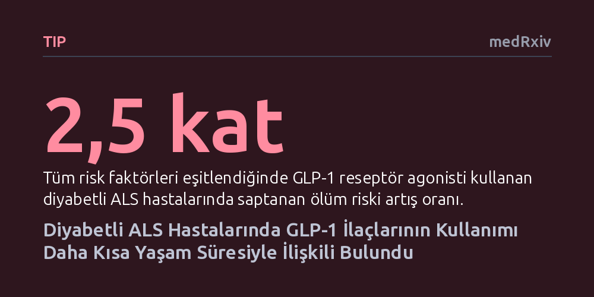

TIP · medRxiv · 2026-09-08
Araştırmacılar, diyabet ve obezite tedavisinde yaygınlaşan GLP-1 reseptör agonistlerinin ALS hastalarındaki seyrini geriye dönük inceledi. Bulgular, bu ilaçları kullanan diyabetli ALS hastalarında ölüm riskinin 2,5 kat arttığını ve trakeostomisiz sağkalım süresinin kısaldığını gösterdi.
Kilo kaybının hastalığın ilerleyişini hızlandırdığı ALS'de, popüler zayıflama ve diyabet ilaçlarının yaşam süresini kısaltabileceğine işaret ederek hekim ve hastaları dikkatli olmaya çağırıyor.

Son yıllarda diyabet tedavisinin yanı sıra kilo verme amacıyla tüm dünyada büyük ilgi gören GLP-1 reseptör agonistleri; tokluk hissi uyandırarak, mide boşalmasını geciktirerek ve kan şekerini düşürerek etki gösteriyor. Ancak bu metabolik yavaşlama ve iştah baskılanması her hastalık için olumlu sonuç vermeyebilir. Özellikle vücudun olağan dışı enerji harcadığı ve kontrolsüz kas erimesinin yaşandığı durumlarda, kilo kaybı hayati bir tehdide dönüşebiliyor.
Amyotrofik lateral skleroz (ALS), istemli kas hareketlerini yöneten motor sinir hücrelerinin hasarıyla ilerleyen, zamanla konuşma, yutkunma ve solunum işlevlerini devre dışı bırakan ölümcül bir nörolojik hastalık. Bu tabloda tanı anındaki ve hastalık sürecindeki kilo kaybı, kötüleşmenin en önemli göstergeleri arasında sayılıyor. Hekimler ve hastalar, obezite ve diyabette çığır açan bu yeni nesil ilaçların ALS seyrine nasıl yansıdığını şimdiye dek net olarak bilmiyordu.
Araştırmacılar, bu kritik sorunun yanıtını aramak için tek bir akademik tıp merkezinde 2020 ile 2024 yılları arasında takip edilen hastaların elektronik sağlık kayıtlarını taradı. Toplam 1.310 ALS hastası arasından aynı zamanda diyabet tanısı taşıyan 136 kişi belirlendi. Ayrıntılı dosya incelemeleri ve uluslararası tanı ölçütlerine uyum değerlendirmesi neticesinde, gerekli tüm verileri eksiksiz bulunan 85 hasta analize dahil edildi.
Bu 85 hastanın 15'inin GLP-1 reseptör agonisti kullandığı, 70'inin ise bu ilaçları almadığı saptandı. Araştırma ekibi, hastaların belirti başlangıcından itibaren kalıcı solunum cihazına bağlanmadan veya yaşamlarını yitirmeden geçirdikleri süreyi inceledi. Analizlerde yaş, cinsiyet, hastalığın yutkunma kaslarından başlayıp başlamadığı, tanı anındaki vücut kitle indeksi ve standart ALS ilacı kullanımı gibi etkenler istatistiksel modellerle eşitlendi.
İncelenen iki grup arasında başlangıç özellikleri açısından belirgin farklar vardı. GLP-1 kullanan hastaların ilk belirtileri yaşadıkları yaş diğer gruptan daha gençti (59 yaşa karşılık 66 yaş) ve belirti başlangıcından tanıya kadar geçen gecikme süresi daha kısaydı (12 aya karşılık 17 ay). Ayrıca bu hastalar tanı anında daha yüksek bir vücut ağırlığına sahipti (85 kiloya karşılık 73 kilo).
Genç yaş ve tanı anında yüksek kilo klinik olarak daha olumlu bir gidişat beklentisi oluştursa da sağkalım verileri tam tersi bir tablo ortaya koydu. Solunum cihazına bağlanmaksızın geçen ortanca yaşam süresi GLP-1 kullananlarda 28,7 ayken, kullanmayanlarda 34,9 ay olarak kaydedildi. Tüm diğer risk faktörleri hesaba katıldığında, GLP-1 kullanımının ölüm riskini 2,5 kat artırdığı görüldü.
Elde edilen sonuçlar, kilo kaybının ve beslenme yetersizliğinin ALS seyrini nasıl kötüleştirebileceğini somut biçimde ortaya koyuyor. GLP-1 grubu ilaçların neden olduğu iştahsızlık ve kilo kaybı, zaten yüksek metabolik hız nedeniyle yoğun enerjiye gereksinim duyan ve kas kütlesini korumakta zorlanan ALS hastalarını daha savunmasız hale getiriyor olabilir.
Bu gözlemsel bulgular söz konusu ilaçların doğrudan zararlı olduğunu kesin olarak kanıtlamasa da, diyabetli ALS hastalarında GLP-1 kullanımına son derece temkinli yaklaşılması gerektiğini gösteriyor. Hastaların hekime danışmadan ilaç değişikliğine gitmemesi, ancak nöroloji ve endokrinoloji uzmanlarının metabolik durumu ve beslenme dengesini birlikte değerlendirmesi büyük önem taşıyor.